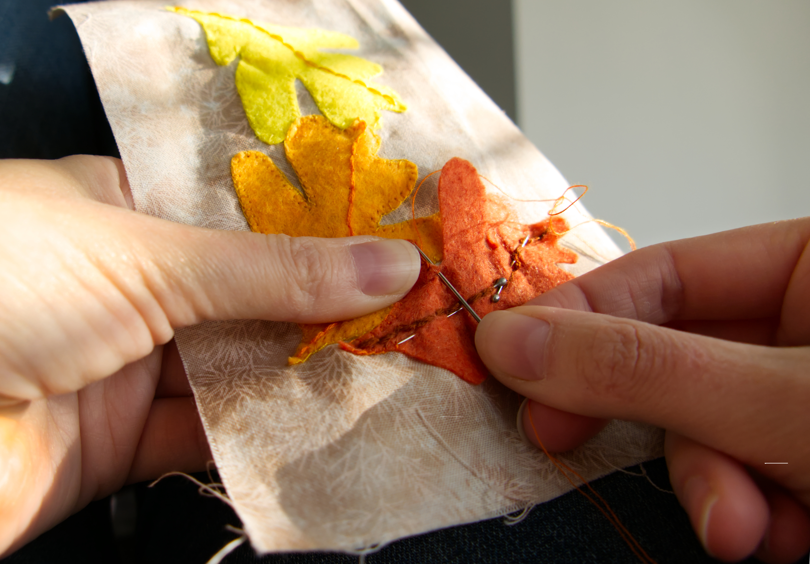
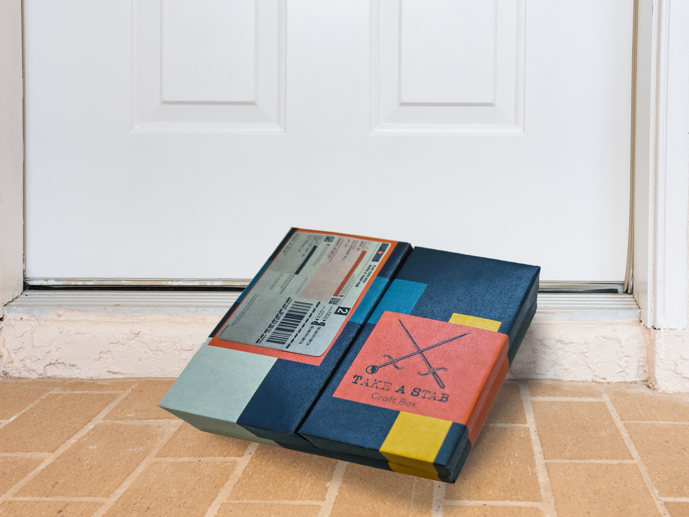
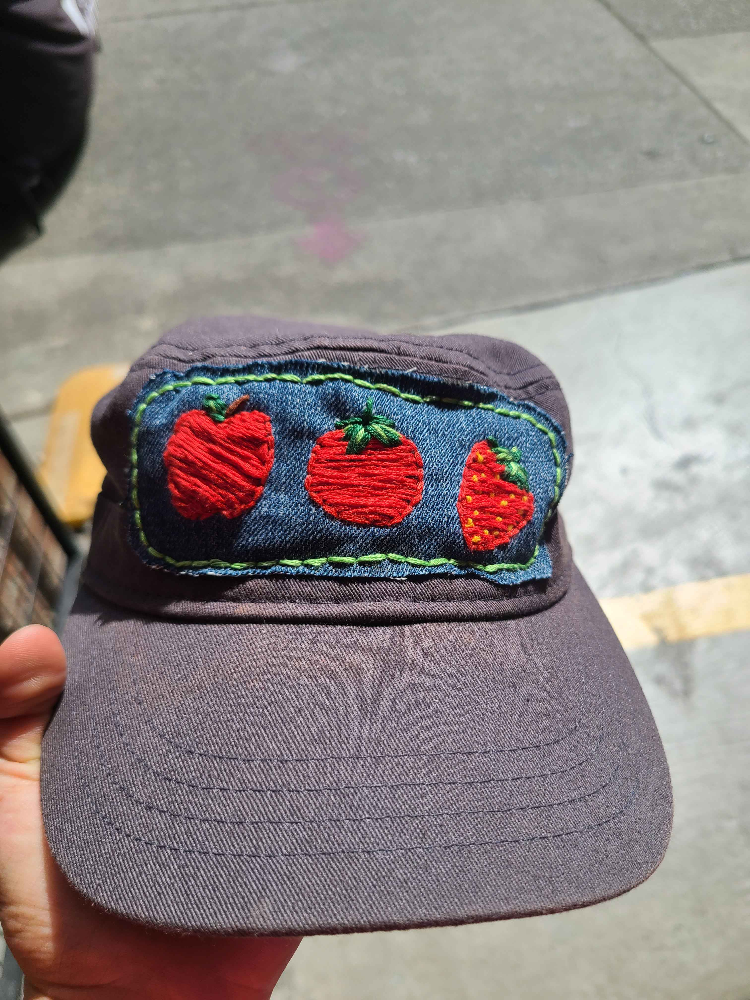
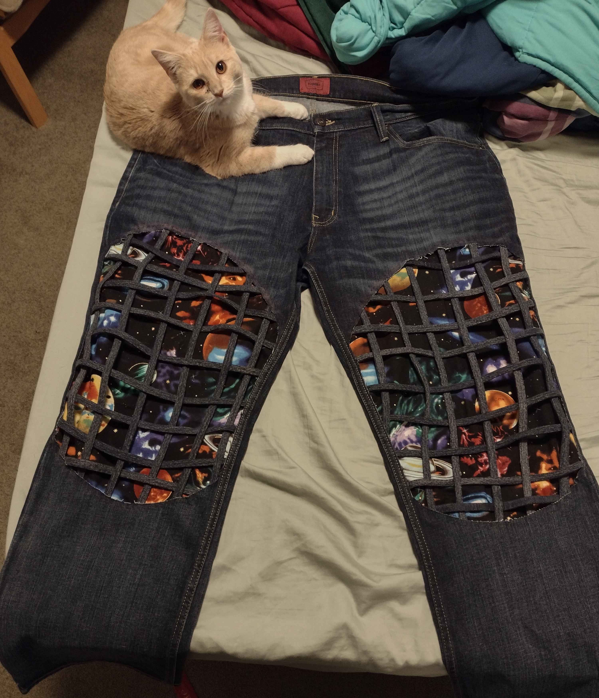
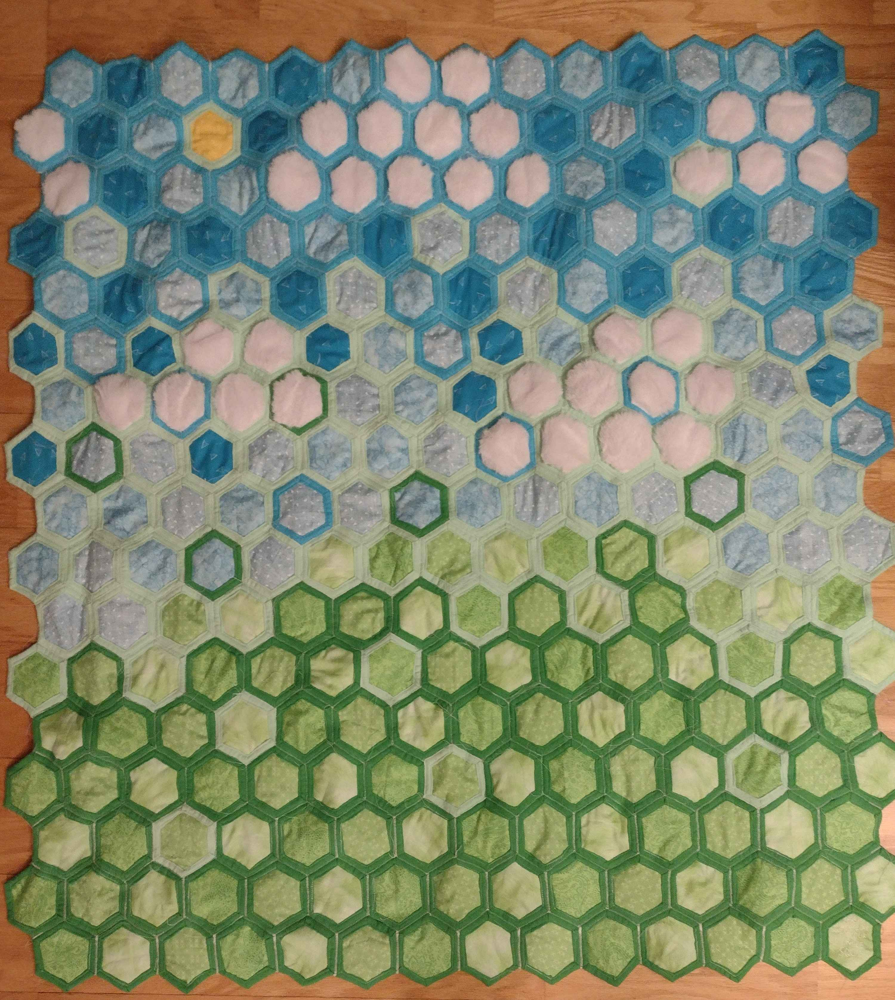
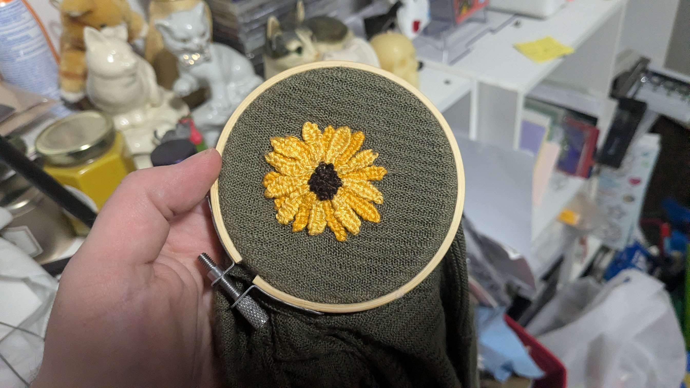

For
Sewing
Patchwork
Embroidery
Creative
Appliqué
Cross-stitch
Quilting
projects




New Projects Every Month
With a subscription to Take A Stab, you're guaranteed to have a brand new project to take a stab at every month. New skills, new crafts, new materials, all delivered right to your doorstop.
Subscription Benefits
Discounted Kits
More Projects
Free Gifts in Every Box
How It Works
-
Choose Your Subscription
Decide if you want a pocket project subscription or a major project subscription
-
Choose How Long to Subscribe
The longer your subscription period, the bigger your savings!
-
Wait for your project kit to arrive
Project kits ship every month on the last monday of the month.
-
Once your kit arrives, get crafting!
Whether you have a question about the kit or just want to show off what you've made, you can always connect with the Take A Stab community to share your experiences with each month's kit.

Community Highlights



